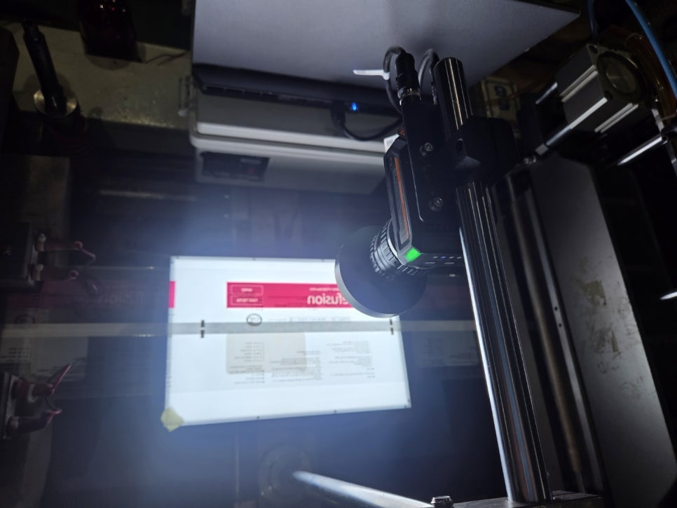
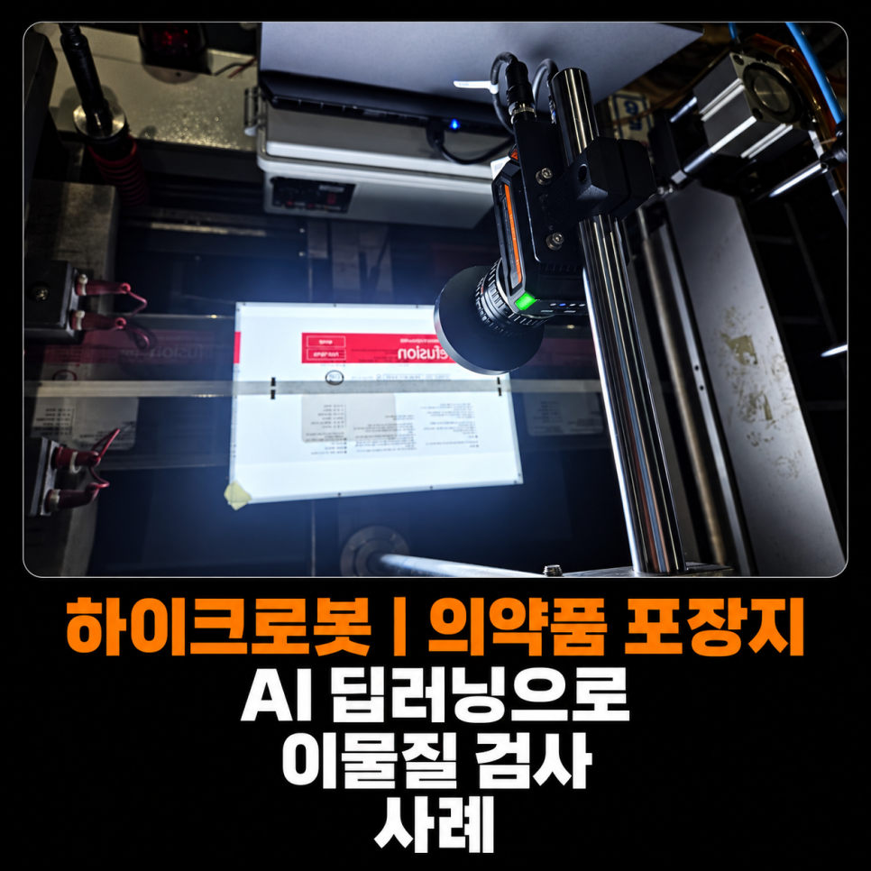
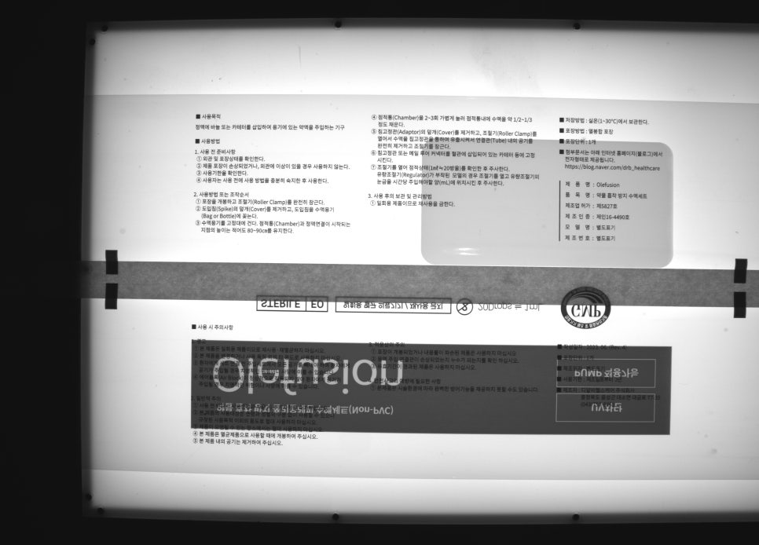
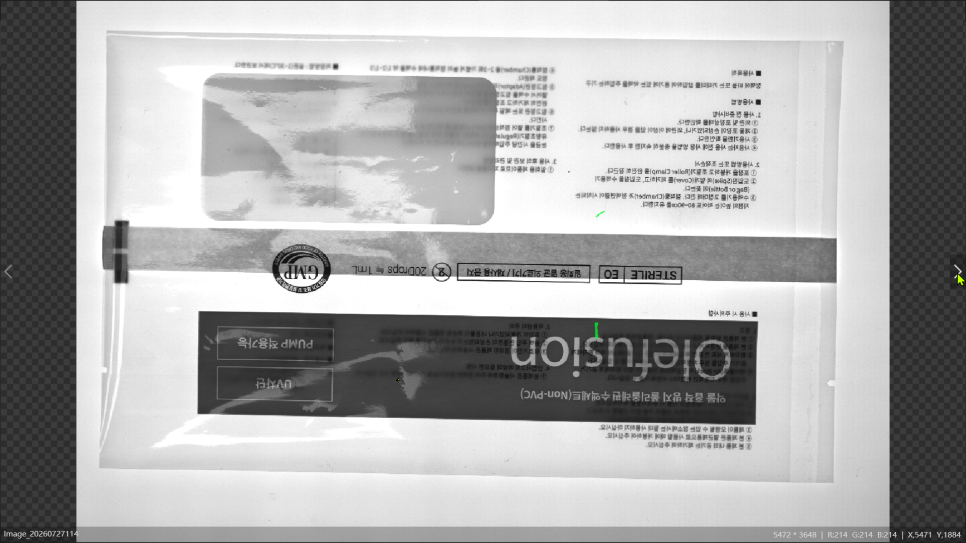
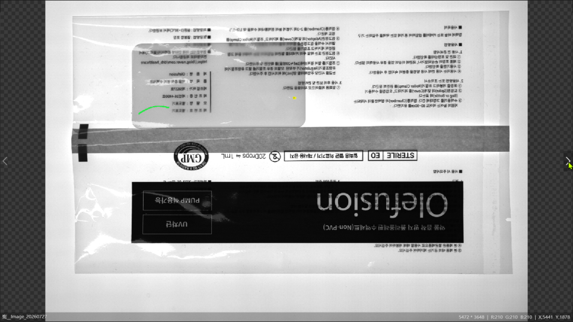
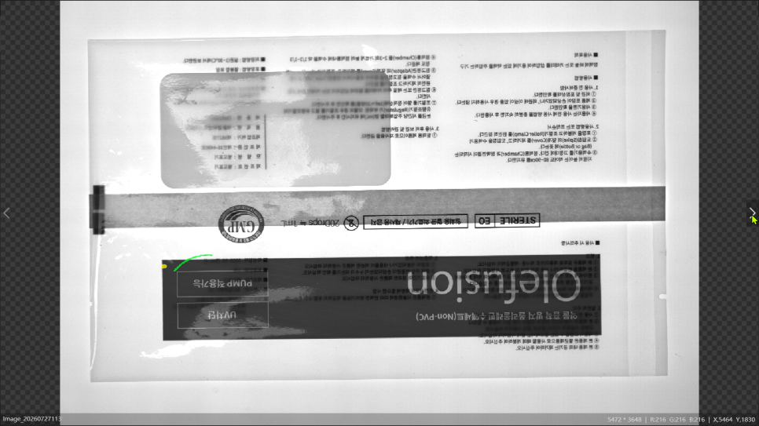
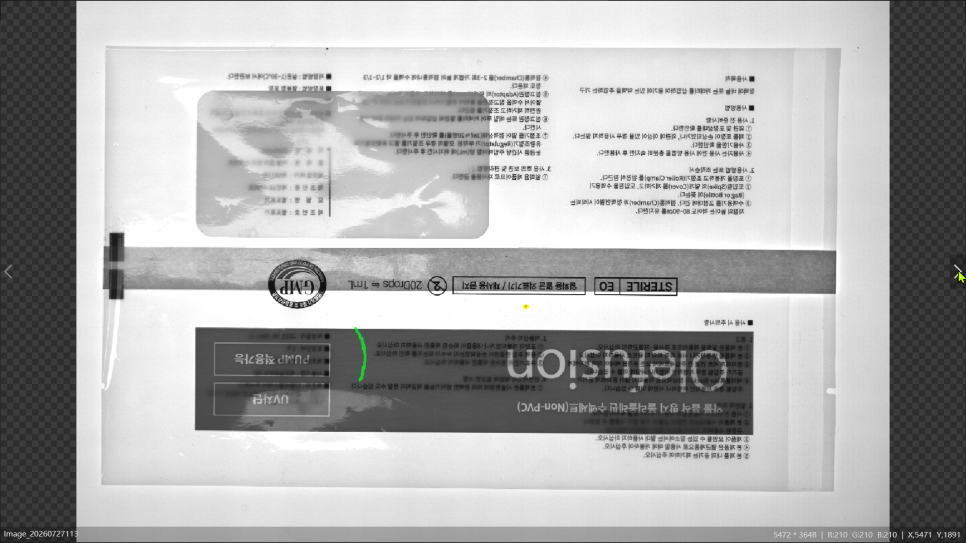
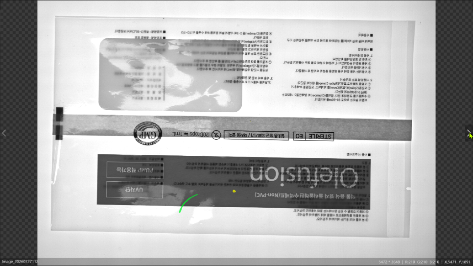
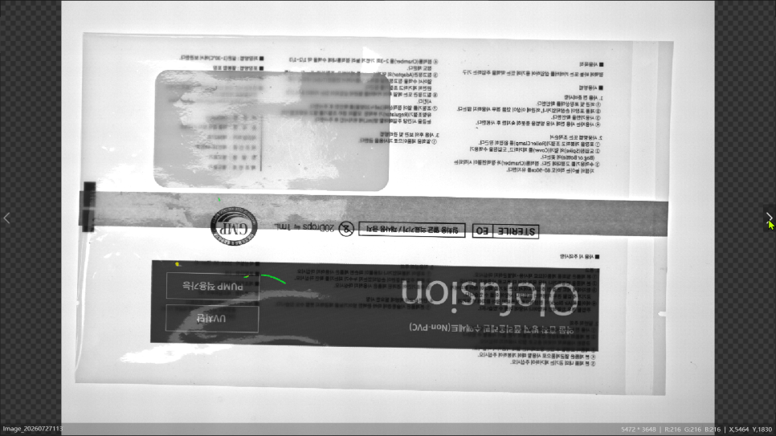
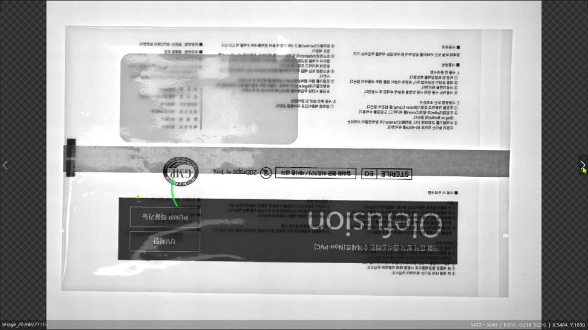

제약 · 의약품 포장 · AI 비전검사
의약품 포장지 머리카락·벌레 AI 이물검사 시스템 사례
HIKROBOT 딥러닝 스마트카메라
화이트 백라이트로 이물의 윤곽을 확보하고 하이크로봇 딥러닝으로 정상 인쇄와 머리카락·벌레를 구분한 사례입니다. 검출 영역과 최종 OK·NG 판정을 설비 제어부에 연결했습니다.

Project Summary
프로젝트 핵심 구성
- 산업
- 제약 · 의약품 포장
- 검사·자동화 대상
- 의약품 포장지 머리카락·벌레 AI 이물검사
- 주요 기술
- HIKROBOT 딥러닝 스마트카메라
- 적용 구분
- 프로젝트 사례
Project Photos
실제 구축 현장 및 검사 화면









01 · Overview
프로젝트 개요
화이트 백라이트로 이물의 윤곽을 확보하고 하이크로봇 딥러닝으로 정상 인쇄와 머리카락·벌레를 구분한 사례입니다. 검출 영역과 최종 OK·NG 판정을 설비 제어부에 연결했습니다.
02 · Problem
프로젝트에서 해결해야 했던 문제
정상 문자·인쇄와 이물 구분 / 비정형 머리카락·벌레 / 균일한 투과 영상 확보 조건에 대응해야 했습니다.
- 정상 문자·인쇄와 이물 구분
- 비정형 머리카락·벌레
- 균일한 투과 영상 확보
03 · System
검사·자동화 시스템 구성
화이트 백라이트로 이물의 윤곽을 확보하고 하이크로봇 딥러닝으로 정상 인쇄와 머리카락·벌레를 구분한 사례입니다. 검출 영역과 최종 OK·NG 판정을 설비 제어부에 연결했습니다.
딥러닝 이물 영역 검출
후처리·OK·NG 판정
설비 결과 연동
04 · Inspection
프로젝트 개요
이번 프로젝트는 제약·바이오 생산라인에서 사용하는 의약품 포장지의 이물질을 자동으로 검사하는 시스템입니다.
주요 검사 대상은 다음과 같습니다.
포장지 표면에 유입된 머리카락
벌레와 작은 유기성 이물
검은색 또는 짙은색의 불규칙한 이물질
정상 인쇄 영역과 구분되는 비정상 오염
검사 시스템은 포장지가 지정된 위치에 도착하면 영상을 촬영하고, 딥러닝 모델이 전체 검사 영역을 분석해 이물질 유무를 판정하도록 구성했습니다.
NG가 검출되면 결과 신호를 설비 제어부로 전달하여 불량품을 선별할 수 있도록 연동했습니다.
05 · Inspection
인쇄가 없었다면 비교적 쉬운 검사였습니다
포장지에 인쇄가 없다면 백라이트를 통과시킨 후 밝기 차이를 이용해 이물질을 검출할 수 있습니다.
머리카락이나 벌레는 빛을 가리기 때문에 밝은 배경 위에서 어두운 형상으로 나타납니다. 이 경우 Threshold, Blob, 면적 또는 길이 측정과 같은 일반적인 룰베이스 도구로도 검사 가능성을 확보할 수 있습니다.
하지만 실제 검사 대상에는 다음과 같은 요소가 함께 존재했습니다.
검은색 문자와 선
제품 로고와 도형
농도가 서로 다른 인쇄 영역
포장지의 겹침 또는 두께 차이
비닐 주름과 미세한 위치 변화
인쇄 색상과 패턴의 제품별 차이
카메라 입장에서는 정상 인쇄와 머리카락이 모두 어두운 픽셀로 보일 수 있습니다.
즉, 단순히 “어두운 부분을 찾는 방식”을 사용하면 정상 문자와 로고까지 이물질로 판정하는 과검출이 발생합니다. 반대로 검출 기준을 완화하면 작은 머리카락이나 벌레를 놓치는 미검출 위험이 커집니다.
이번 프로젝트의 핵심 난점은 이물질 자체를 보이게 만드는 것보다, 복잡한 정상 인쇄와 실제 이물질을 안정적으로 구분하는 것이었습니다.
06 · Inspection
백라이트를 적용한 이유
이번 의약품 포장지 이물검사에는 화이트 백라이트 조명을 적용했습니다.
백라이트는 검사 대상의 뒤쪽에서 카메라 방향으로 빛을 조사하는 방식입니다. 포장지 전체에 비교적 균일한 밝기를 형성하고, 빛을 차단하는 이물질을 어두운 형상으로 표현하는 데 유리합니다.
이번 프로젝트에서 백라이트가 담당한 역할은 다음과 같습니다.
넓은 포장지 영역의 밝기 균일화
머리카락과 벌레의 윤곽 강조
외부 조명 변화의 영향 감소
포장지 표면 반사보다 투과 차이를 이용한 영상 형성
딥러닝이 학습할 수 있는 일관된 촬영 조건 확보
다만 백라이트만으로 정상 인쇄를 제거할 수는 없습니다. 인쇄 역시 빛을 일부 차단하기 때문에 영상에서 이물질과 비슷한 명암으로 나타날 수 있기 때문입니다.
따라서 이번 시스템에서는 백라이트로 이물질의 형상을 최대한 안정적으로 표현하고, 인쇄와 이물질의 구분은 딥러닝이 담당하도록 구성했습니다.
07 · Inspection
일반적인 Blob 검사로 어려웠던 이유
일반적인 이물검사는 영상의 밝기 차이를 이진화한 후 Blob 도구로 면적, 길이, 원형도 등의 특징을 분석합니다.
하지만 인쇄가 완료된 의약품 포장지에서는 정상 문자와 도형도 수많은 Blob으로 검출됩니다.
머리카락은 가늘고 긴 형상을 가지는 경우가 많지만 항상 직선 형태로 놓이지는 않습니다. 인쇄선과 겹치거나 휘어질 수 있으며, 일부만 영상에 나타날 수도 있습니다.
벌레 역시 크기와 형태가 일정하지 않습니다.
따라서 다음과 같은 고정 기준만으로는 안정적인 분류가 어려웠습니다.
픽셀 밝기
Blob 면적
가로·세로 길이
원형도
종횡비
단순 패턴 비교
룰베이스 조건을 과도하게 세분화하면 초기 샘플에서는 동작하더라도 제품 변경이나 인쇄 위치 편차가 발생했을 때 오검출이 늘어날 수 있습니다.
이러한 이유로 이번 프로젝트에서는 정상 인쇄와 비정형 이물질의 차이를 학습할 수 있는 하이크로봇 딥러닝 기반 AI 비전검사를 적용했습니다.
08 · Inspection
하이크로봇 딥러닝을 이용한 이물질 검출
이번 시스템에서는 정상 포장지 이미지와 다양한 이물질 샘플을 수집한 후, 하이크로봇 딥러닝 모델을 학습시켰습니다.
딥러닝은 단순히 픽셀의 밝기만 비교하지 않습니다. 학습된 데이터를 바탕으로 이물질의 형태, 주변 영역과의 관계, 정상 인쇄 패턴과의 차이를 종합적으로 분석합니다.
이를 통해 다음과 같은 조건에 대응하도록 구성했습니다.
정상 문자와 머리카락 구분
인쇄선 주변에 위치한 이물질 검출
크기와 모양이 일정하지 않은 벌레 검출
구부러지거나 일부가 끊겨 보이는 머리카락 검출
서로 다른 인쇄 색상과 포장지 유형 대응
불규칙한 형태의 이물질 영역 표시
특히 이물질의 정확한 위치와 형상을 구분해야 하는 경우에는 이미지 전체를 단순 분류하는 방식보다 AI 세그멘테이션 기반 검사가 효과적일 수 있습니다.
세그멘테이션은 이물질이 존재하는 영역을 픽셀 단위로 구분합니다. 검출된 영역의 면적, 길이 또는 위치를 후처리 조건과 결합하면 생산 기준에 맞는 최종 OK·NG 판정을 구성할 수 있습니다.
09 · Inspection
스마트카메라 딥러닝을 적용한 이유
딥러닝 검사라고 하면 고성능 GPU가 장착된 산업용 PC부터 떠올리는 경우가 많습니다.
PC 비전은 여러 대의 고해상도 카메라를 동시에 처리하거나 대규모 모델을 운용할 때 유리합니다. 하지만 카메라 수와 검사 범위가 제한적이고, 필요한 딥러닝 모델을 스마트카메라에서 처리할 수 있다면 시스템 구성을 더 단순화할 수 있습니다.
이번 프로젝트에서는 하이크로봇 딥러닝 스마트카메라를 사용해 학습된 모델의 추론을 카메라 내부에서 수행하도록 구성했습니다.
스마트카메라 방식의 주요 장점은 다음과 같습니다.
생산설비에 별도의 고성능 GPU PC를 설치할 필요가 없음
카메라 내부에서 촬영과 AI 추론 수행
설비 구성이 단순해짐
설치 공간과 배선 부담 감소
PLC 및 외부 제어기와 결과 신호 연동 가능
생산라인에 필요한 검사 택타임 확보에 유리
현장 유지관리 항목 감소
여기서 구분해야 할 점이 있습니다.
딥러닝 모델을 학습하는 과정에서는 데이터 구성과 학습을 위한 PC가 필요할 수 있지만, 학습이 완료된 모델을 이용해 실제 생산라인에서 검사하는 추론 과정은 스마트카메라 내부에서 수행할 수 있습니다.
따라서 운영 현장마다 고성능 PC를 설치하지 않고도 AI 비전검사 시스템을 구성할 수 있다는 점이 하이크로봇 스마트카메라의 장점입니다.
다만 적용 가능한 모델의 종류, 입력 이미지 크기, 검사 속도 및 동시 처리 수는 스마트카메라 사양에 따라 달라집니다. 실제 적용 전에는 반드시 대상 샘플과 요구 택타임을 기준으로 테스트해야 합니다.
10 · Inspection
엣지러닝과 딥러닝의 차이
엣지러닝과 딥러닝은 서로 경쟁하는 기술이라기보다 검사 난이도와 데이터 조건에 따라 선택하는 방식에 가깝습니다.
엣지러닝은 비교적 적은 수의 이미지로 빠르게 설정할 수 있고, 정상·불량 분류나 단순한 외관 이상 검출에 유리합니다. 학습 절차가 간단해 현장에서 모델을 구성하고 수정하기도 비교적 쉽습니다.
반면 딥러닝은 충분한 학습 이미지와 라벨링 과정이 필요하지만, 다음과 같이 변화가 복잡한 검사에 적용하기 좋습니다.
정상 배경의 변화가 큰 검사
불량의 크기와 형태가 일정하지 않은 검사
정상 패턴과 불량이 서로 겹쳐 보이는 검사
픽셀 단위로 불량 위치를 구분해야 하는 검사
여러 종류의 제품과 인쇄 패턴에 대응해야 하는 검사
이번 의약품 포장지처럼 정상 인쇄가 복잡하고 머리카락과 벌레의 모양이 일정하지 않은 환경에서는 단순 분류보다 더 세밀한 학습과 영역 검출이 필요했습니다.
따라서 빠른 설정이 장점인 엣지러닝보다는 복잡한 특징을 학습하고 이물질 영역을 구분할 수 있는 딥러닝 방식이 검사 목적에 더 적합했습니다.
구분 | 엣지러닝 | 딥러닝 학습 데이터 | 비교적 적은 이미지로 시작 가능 | 다양한 정상·불량 이미지 필요 설정 난이도 | 비교적 간단함 | 데이터 분류와 라벨링 필요 적합한 검사 | 단순 분류, 존재 유무, 이상 검출 | 복잡한 외관검사, 검출, 세그멘테이션 형상 변화 대응 | 제한적인 조건에 적합 | 비정형 불량 대응에 유리 불량 영역 표시 | 도구에 따라 제한적 | 픽셀 단위 영역 검출 가능 주요 장점 | 빠른 구축과 간편한 수정 | 복잡한 검사와 다양한 불량 대응
모든 검사에 딥러닝이 필요한 것은 아닙니다. 검사 기준이 명확하고 영상 대비가 충분하다면 기존 Blob, 측정, 패턴매칭 도구가 더 간단하고 효율적일 수 있습니다. AI 적용 여부는 기술의 우열이 아니라 제품 변화, 불량 형태, 오검출 허용 범위와 검사 속도를 기준으로 결정해야 합니다.
11 · Inspection
AI 이물검사에서 중요한 학습 데이터
딥러닝 이물검사는 카메라 사양만으로 성능이 결정되지 않습니다.
실제 생산환경을 대표하는 학습 데이터를 얼마나 적절하게 구성했는지가 매우 중요합니다.
이번과 같은 제약·바이오 포장검사에서는 다음 조건을 함께 검토해야 합니다.
제품별 인쇄 색상과 디자인
정상 인쇄의 위치 편차
포장지 주름과 겹침
머리카락의 색상, 굵기와 길이
벌레의 크기와 형태
이물질이 인쇄 위에 겹친 경우
검사해야 하는 최소 이물 크기
허용 가능한 오검출과 미검출 기준
생산 중 발생할 수 있는 정상적인 얼룩이나 자국
학습 이미지에 없는 조건이 생산라인에서 반복적으로 발생하면 검사 결과가 불안정해질 수 있습니다.
따라서 초기 학습만으로 작업을 끝내기보다 실제 양산 과정에서 발생한 오검출·미검출 이미지를 검토하고, 필요한 데이터를 추가해 모델을 보완하는 과정이 중요합니다.
12 · Inspection
검사 성능을 좌우하는 적용 조건
의약품 포장지 이물검사 시스템을 구성할 때는 다음 항목을 함께 확인해야 합니다.
1. 최소 검출 크기
검출해야 하는 가장 작은 머리카락과 벌레의 크기를 먼저 정해야 합니다.
동일한 카메라라도 촬영 범위가 넓어질수록 대상 하나가 차지하는 픽셀 수는 감소합니다. 검사 범위와 최소 불량 크기를 기준으로 필요한 카메라 해상도를 계산해야 합니다.
2. 검사 영역과 제품 위치
포장지가 매번 다른 위치에 놓이거나 휘어지면 검사 영역도 달라질 수 있습니다.
가이드 구조, 제품 정렬 상태, 트리거 위치와 촬영 타이밍을 안정화해야 합니다.
3. 백라이트 밝기와 균일도
넓은 필름을 검사할 때는 중앙과 가장자리의 밝기 차이가 판정 결과에 영향을 줄 수 있습니다.
조명의 크기뿐 아니라 확산판, 설치 거리, 노출시간과 밝기 균일도를 함께 확인해야 합니다.
4. 생산 택타임
AI 추론시간만 확인해서는 안 됩니다.
촬영, 이미지 전송, 딥러닝 추론, 후처리, PLC 통신과 배출 동작까지 포함한 전체 검사시간이 생산 택타임 안에 들어오는지 검증해야 합니다.
5. 한계 샘플 기준
머리카락과 벌레를 어디까지 검출할 것인지 명확한 기준이 필요합니다.
최소 크기, 색상, 위치, 인쇄와 겹친 상태 등 한계 샘플을 사전에 정의해야 학습 방향과 최종 합격 기준을 일치시킬 수 있습니다.
13 · Inspection
프로젝트 적용 효과
이번 시스템 구축을 통해 다음과 같은 효과를 기대할 수 있도록 구성했습니다.
의약품 포장지의 머리카락 및 벌레 자동검사
복잡한 인쇄 영역과 실제 이물질 구분
하이크로봇 딥러닝 기반 AI 비전검사 적용
백라이트를 이용한 이물질 윤곽 강조
AI 세그멘테이션을 통한 이물질 영역 검출
스마트카메라 내부 AI 추론
생산설비용 고성능 GPU PC 구성 부담 감소
생산라인 검사 택타임 대응
PLC 및 불량 배출 장치와 연동
제약·바이오 포장공정의 검사 자동화
실제 검출 성능은 제품 종류, 인쇄 패턴, 이물질 크기, 촬영 범위 및 학습 데이터 구성에 따라 달라질 수 있으므로 양산 적용 전 충분한 샘플 검증이 필요합니다.
14 · Inspection
적용 시 고려사항
이번 프로젝트는 인쇄된 의약품 포장지에서 머리카락과 벌레 등의 이물질을 검출한 제약·바이오 AI 비전검사 사례입니다.
인쇄가 없는 포장지라면 일반적인 영상처리만으로 비교적 간단하게 접근할 수 있지만, 정상 인쇄와 이물질이 유사한 명암으로 나타나는 환경에서는 고정된 룰만으로 안정적인 판정 기준을 만들기 어렵습니다.
이번 시스템은 백라이트를 이용해 이물질의 형상을 안정적으로 표현하고, 하이크로봇 스마트카메라의 딥러닝 기능을 통해 정상 인쇄와 비정형 이물질을 구분하도록 구성했습니다.
또한 학습된 모델의 추론을 스마트카메라에서 수행해 별도의 고성능 GPU PC 없이도 생산라인에서 요구하는 검사 속도에 대응할 수 있는 구성을 적용했습니다.
ASPEC은 제약·바이오, 의료기기, 식품, 자동차, 반도체 및 전자부품 생산현장을 대상으로 머신비전 시스템, AI 외관검사, 포장지 이물검사, OCR·OCV, 바코드 판독 및 로봇 비전 프로젝트를 수행하고 있습니다.
의약품 포장지의 인쇄 상태와 검출해야 할 최소 이물 크기, 생산 택타임을 함께 검토한 후 현장 조건에 적합한 카메라, 렌즈, 조명과 AI 검사 방식을 제안해 드립니다.
위와 같은 고민이 있으시다면 ASPEC이 다양한 머신비전 구축 경험을 바탕으로 최적의 자동 검사 솔루션을 제안해 드리겠습니다.
Project Videos
실제 검사·자동화 영상
Operation
현장 적용과 운영 조건
화이트 백라이트로 이물의 윤곽을 확보하고 하이크로봇 딥러닝으로 정상 인쇄와 머리카락·벌레를 구분한 사례입니다. 검출 영역과 최종 OK·NG 판정을 설비 제어부에 연결했습니다.
- 정상 문자·인쇄와 이물 구분
- 비정형 머리카락·벌레
- 균일한 투과 영상 확보
Result
적용 효과
- 정상 문자·인쇄와 이물 구분
- 비정형 머리카락·벌레
- 균일한 투과 영상 확보
Engineering
ASPEC의 머신비전 시스템 설계 방식
검사 대상의 재질과 형상, 설치 공간과 생산 조건에 맞춰 장비·광학·소프트웨어와 설비 연동을 함께 검토합니다.
- 정상 문자·인쇄와 이물 구분
- 비정형 머리카락·벌레
- 균일한 투과 영상 확보
08 · Related Cases
관련 구축사례
비슷한 공정의 자동화를 검토하고 계신가요?
검사 대상과 불량 샘플, 설치 공간, 택타임을 알려주시면 적용 구성을 검토해 드립니다.